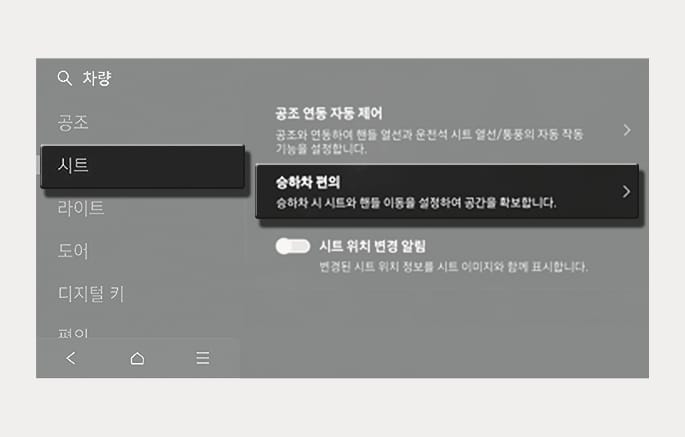

승하차 편의 기능

2C_AdjustSeatAVN_2
운전자가 편하게 차량에 탑승하거나 하차할 수 있도록 좌석 위치를 자동으로 조절합니다.
인포테인먼트 시스템에서 차량 > 시트 > 승하차 편의 > 운전석 시트 이동을 누른 후 운전석의 작동 방법을 설정할 수 있습니다(길게 이동/짧게 이동/끄기).
-
시트 위치 변경 알림을 선택하면 시트 위치 변경 시 변경 정보가 화면에 표시됩니다.
업데이트로 인해 인포테인먼트 시스템의 상세 설정이 변경될 수 있습니다. 자세한 설정 방법은 인포테인먼트 시스템 웹 매뉴얼을 참고하십시오.
하차 위치로 운전석 이동
'P'(주차)로 변속한 후 시동을 끄고 운전석 도어를 열면 운전석이 설정 메뉴에서 선택한 거리만큼 뒤로 이동합니다.
승차 위치로 운전석 이동
스마트 키를 휴대하고 운전석에 탑승한 후 도어를 닫으면 운전석이 원래 위치로 이동합니다.